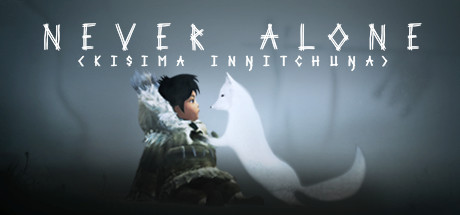
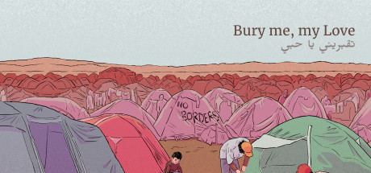

Explorar Jogos

This War Of Mine
Um jogo que coloca o jogador no papel de civis numa cidade devastada pela guerra, onde lutam para sobreviver em condições adversas. O jogo aborda temas de sobrevivência, escassez e desigualdade.

Never Alone
Um jogo de plataforma colaborativo inspirado na cultura indígena Inupiaq do Alasca, que explora temas de conexão cultural e identidade.

Bury Me My Love
Um jogo de simulação baseado em histórias reais, onde o jogador acompanha a jornada de uma refugiada síria que tenta encontrar um futuro melhor na Europa.